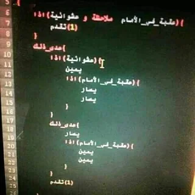
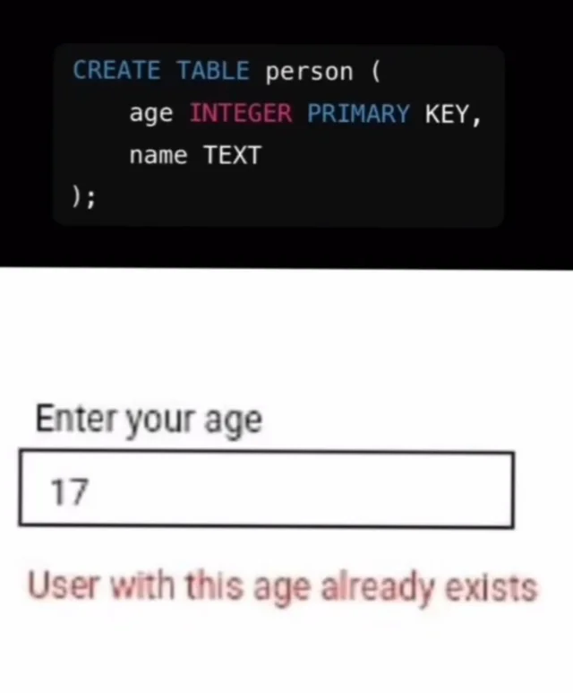
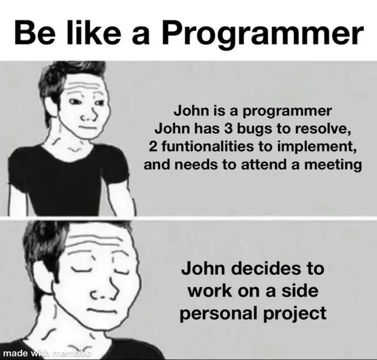
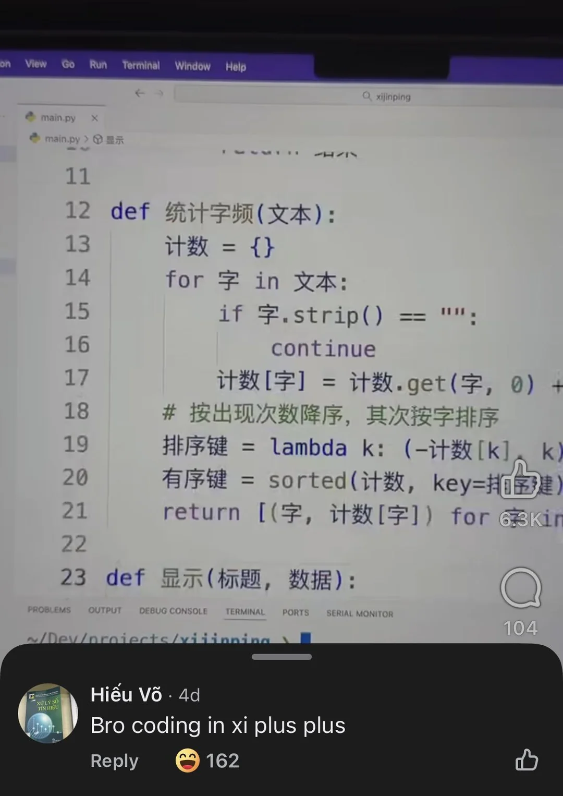
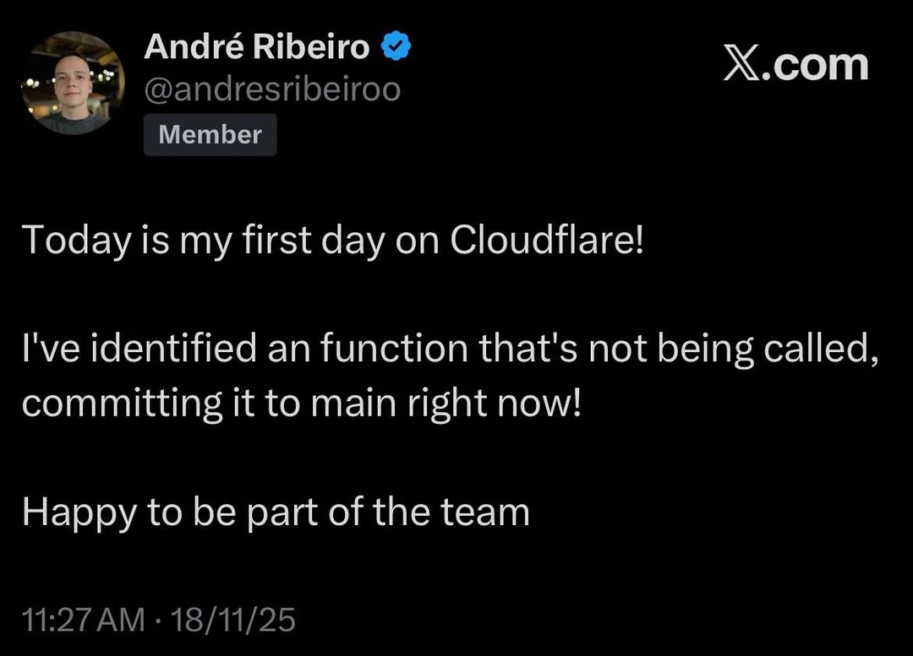

Tutvu erinevate programmeerijatega
ALGAJA
Vähesed sünnivad programmeerijatena - paljud õpivad terve elu programmeerijaks. Kõik,
kes võtavad selle keerulise tee ette, jagavad samu hetki: esimene programm
print("hello world"), esimene debug, esimene projekt jne.
Mida aeg edasi,
seda pädevamaks saab alustaja.
Perfektsionist
Iga programm peab olema täiuslik. "See peab olema nii lühike kui võimalik ja nii pikk kui vaja" - sellist tüüpi progeja võib enda koodi mitu korda ümber kirjutada "optimiseerides seda". Ka perfektsioniste on mitmeid: kes loob clean koodi, kes loob parima kiirusega koodi, kes loob maksimaalset funktsionaalsust.
IF IF IF - kui see töötab, siis see töötab
Programmeerimine ei pea olema raske. Kui midagi ei tööta, siis pane sinna duct tape peale ning mine päevaga edasi. Kui miski ei vaja parandamist, siis ära paranda seda. Sellised progejad ei näe ekstra vaeva, kui kood töötab. Pole vahet, kas koodis on miljon if-nestingut - if it works, it works

Vibe coder
Milleks kasutada enda energiat, kui saab kasutad tehisintellekti energiat? Vibe coderid oskavad väga hästi ära kasutada tehisintellekti, kes põhimõtteliselt programmeerib enamuse nende eest. Kui vibe coder midagi ei oska, siis on see ainult õige prompti küsimus. Tulemus võib olla kõige parem kood või kõige suurem katastroof.
200 project guy
Sellel progejal on kogu aeg midagi käsil. Ta võib ühe projektiga alustada ja siis keset teostust tekib tal uus veel parem idee - uus projekt! Ta ei suuda kunagi ühtegi projekti täielikult lõpetada, sest juba ootab teda uus.
Automate everything
Igapäevased probleemid on sellele progejale väljakutsed - ta saab säästa palju aega, kui ta selle probleemi lahendamise automatiseerib. Pole oluline, et probleemi lahendamine võtaks tal päriselt aega 2 minutit ja programmi kirjutamine 2 tundi - vähemalt on see nüüd automatiseeritud.
Praktikant
Töökogemus on oluline - tasub minna praktikale. Ettevõte saab lisatööjõu ja praktikant saab kogemust - win win. Selline progeja toob igalpool vabanduseks, et "ma lähen tööle", kuid tegelikult ta läheb tekitama maailma suurimat bugi ettevõte koodi.
Praktilised nõuanded
Kuidas domineerida liigikaaslaste üle?
- Programmeeri öö ja päev - uni on nõrkadele
- Flexi enda teadmisi - paranda teisi
- Ole Discordis aktiivseim moderaator
- Igapäev 1000 git commiti
- Kasuta kõige valjemat klaviatuuri
- Kahest monitorist ei piisa - vaja on 4